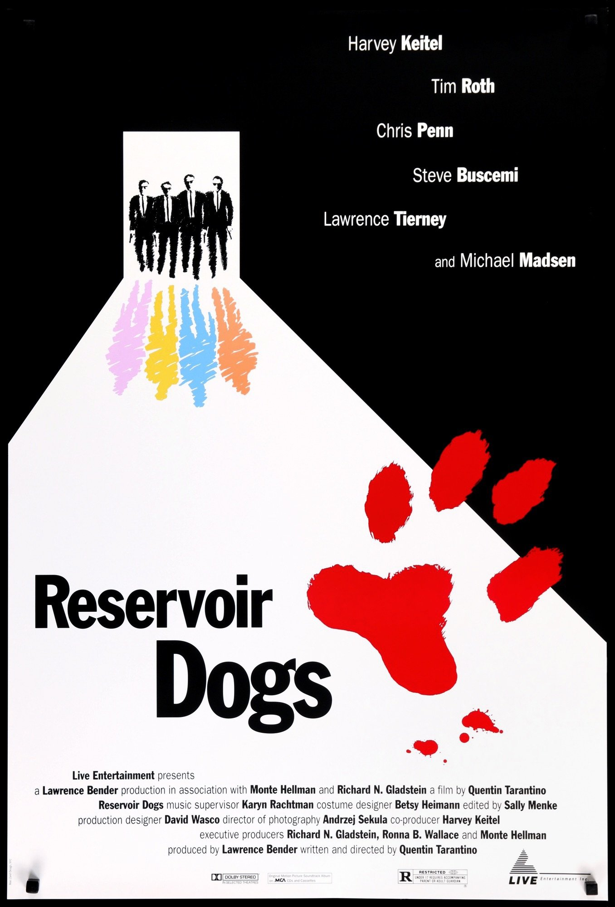
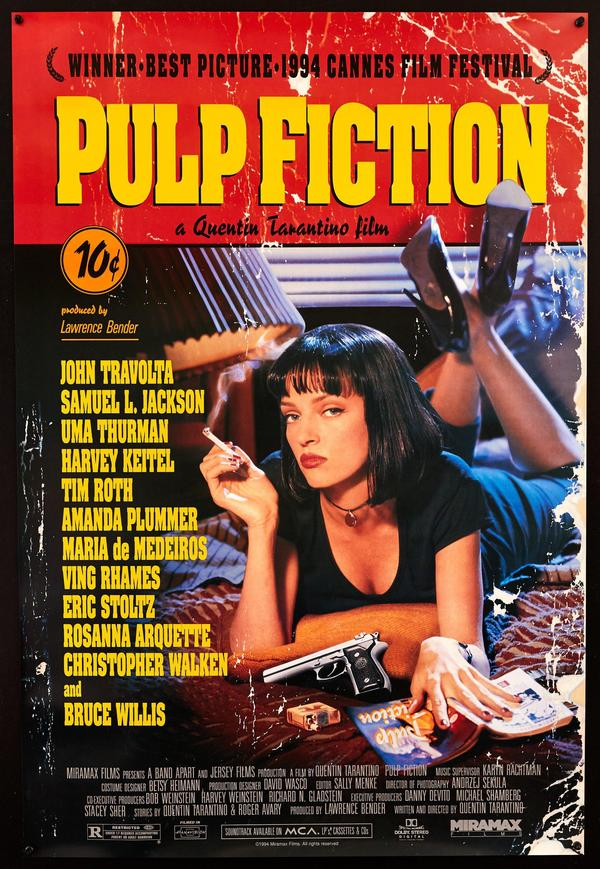
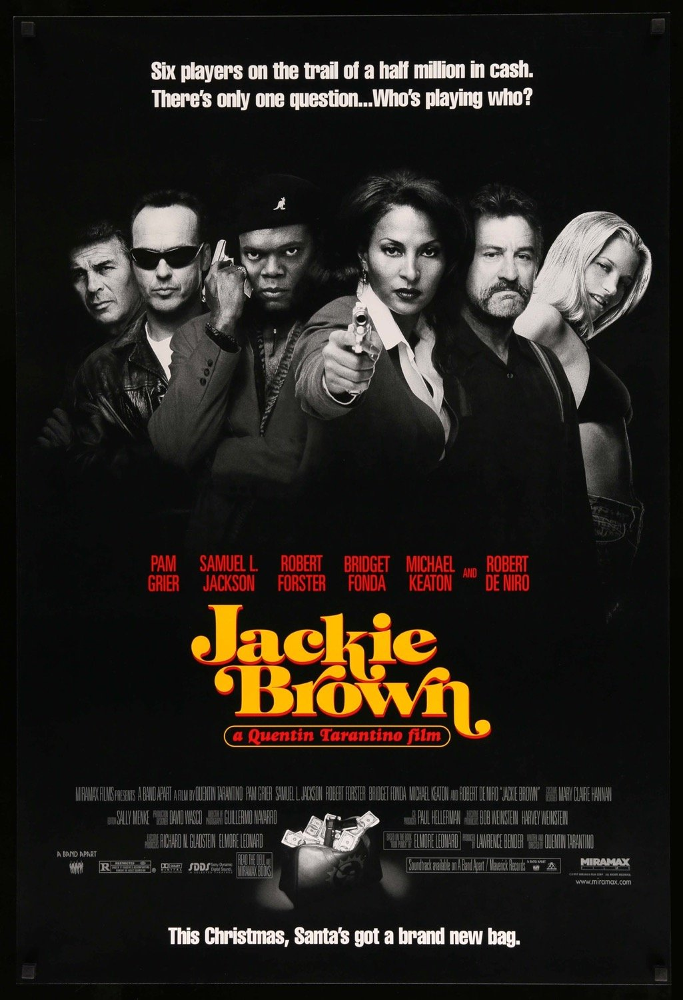

Early Indie Films
Reservoir Dogs
The directors first film was Reservoir Dogs was made for $1.2 million and only grossed $2.9 million. However, over time this film blew up, as it featured some very realistic, gritty, and pop culture filled dialogue. It also has such a wild and twisted story, which features some very violent and surprising twists throughout the film.
Pulp Fiction
After his first feature film's success, he followed up with Pulp Fiction, which is still regarded as one of the greatest and most quoted films of all time. With a stellar cast, the now stylized Tarantino dialogue and editing techniques, and a killer soundtrack this film won audiences over time and time again. While the film only cost $2 million to make it grossed $213.9 million!
Jackie Brown
His third feature film he made was Jackie Brown. This film cost $12 million and grossed $74.7, and while it did do well in the box office the film received a lot of mixed reviews. However, it developed a large cult following after its release. This film also notably got Chris Tucker his job for the Rush Hour series, even though he is only featured in about 10 minutes of the film.